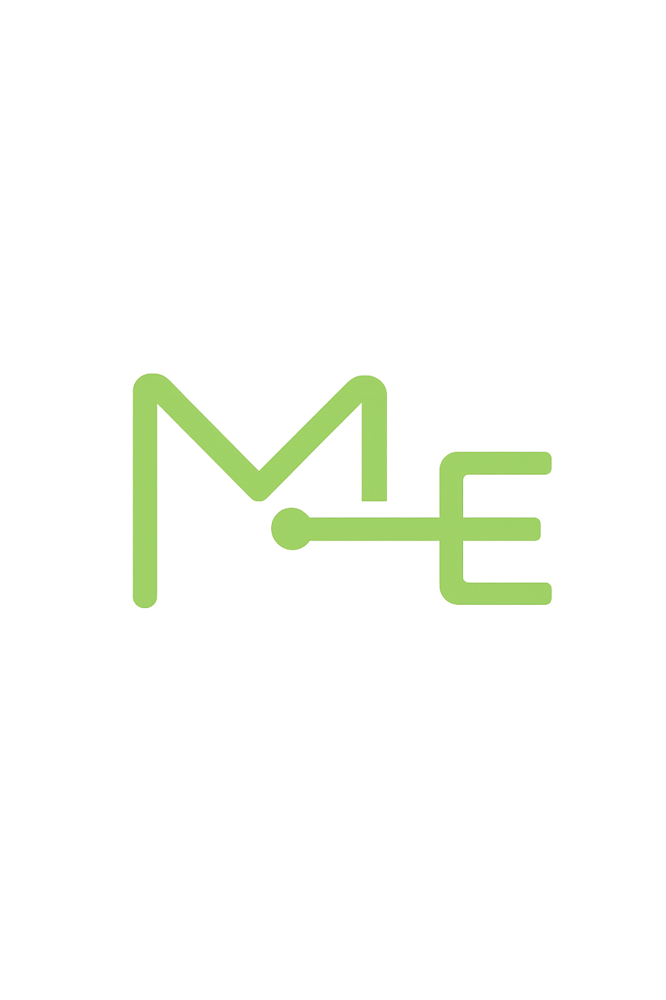

Identidade visual
Mais Experiência — Onde experiência encontra novas oportunidades
maisexperiencia.com.br · Público 50+ · Atualização junho/2026
1. Nome e mensagem
| Elemento | Conteúdo |
|---|
| Nome oficial | Mais Experiência |
| Tagline | Onde experiência encontra novas oportunidades |
| Tom | Respeitoso, claro, inclusivo — evitar “idoso”, “terceira idade” |
| Símbolo | “+” / mais oportunidades; experiência como valor |
2. Paleta de cores
--cor-primaria-escura#3d7349
Alto contraste: fundo #000, texto #fff, acento #ffeb3b.
Ficheiros: paleta-cores.csv · tokens.css
3. Tipografia
| Papel | Fonte | Tamanho mínimo |
|---|
| UI / corpo | Nunito Sans (+ system-ui) | 18px (1.125rem) |
| Nome da marca | Nunito Sans 700 | clamp 1.25–1.625rem |
| Tagline | Nunito Sans 400 | clamp 0.875–1rem |
4. Logo
| Ficheiro | Descrição |
|---|
logo.png | Logo oficial — header, favicon e destaques |
logo-header.svg | Export SVG do header |
+ Experiência/1.svg | Variante 1 — monograma escolhido |
+ Experiência/2.svg | Variante 2 — alternativa Canva |
- Header: ícone + “Mais Experiência” + tagline
- Caixa do logo: fundo branco, borda
#c3c7b0, sombra verde suave
- Destaques na home: logo do parceiro 48×48px quando disponível
- Não distorcer — usar
object-fit: contain
5. Header
[ caixa logo ] Mais Experiência
Onde experiência encontra novas oportunidades
6. Componentes UI
| Componente | Estilo |
|---|
| Botão primário | Verde #529465, pill, min-height 48px |
| Botão outline | Borda verde, fundo transparente |
| Card pilar / destaque | Fundo branco, borda sage, topo 4px verde |
| Secções | Divisor 1px #c3c7b0 |
| Páginas app | css/app-page.css |
7. Personas visuais
| Persona | Cor sugerida |
|---|
| Pessoa 50+ | Verde #529465 + fundo #f7f5f1 |
| Parceiro B2B | Azul acinzentado #4a6670 |
| Admin | Teal suave #5a8f8a |
8. Acessibilidade
- Contraste AA (WCAG 2.1) nos fluxos core
- Modo alto contraste no header
- Escala de fonte ajustável (5 níveis)
- Alvos de toque ≥ 44×44px
- Skip link para conteúdo principal
9. Referências Canva